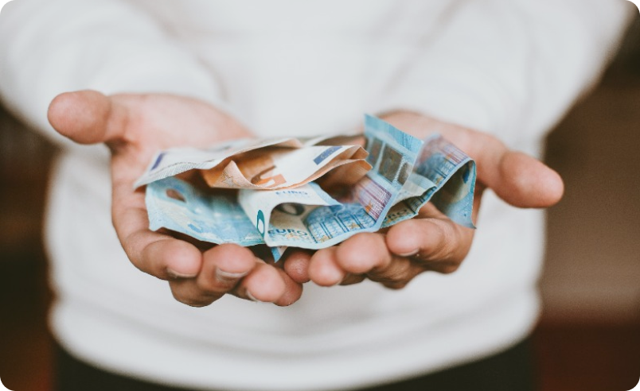

Уроки и тесты / Глава 3
Глава 3. Понятие экономии. Как экономить?
Экономия — это практика сокращения расходов и увеличения накоплений с целью достижения финансовой стабильности и достижения финансовых целей. Экономия включает в себя правильное планирование бюджета, сокращение ненужных расходов, умное потребление и умение управлять финансовым потоком.
Основная идея экономии денег заключается в том, чтобы жить по средствам и избегать расточительства. Это может включать в себя отказ от покупки ненужных товаров или услуг, поиск лучших предложений и скидок, использование собственных ресурсов вместо покупки новых, снижение расходов на коммунальные услуги, покупку продуктов со скидками и т. д.
Цель экономии денег может быть разной для каждого человека. Некоторые могут стремиться к покупке недвижимости, образованию, путешествиям или планированию пенсии. Однако независимо от конкретной цели, экономия денег помогает обеспечить финансовую стабильность и создать финансовую базу для будущих потребностей.
Экономия является важным аспектом достижения финансового благополучия. Экономия означает, что вы сознательно контролируете свои расходы и стремитесь сохранять определенную часть своего дохода. Вот несколько причин, почему экономия может быть ключом к финансовому благополучию:
- Накопления: сохранение денег позволяет вам создать запас на случай чрезвычайных ситуаций, таких как потеря работы или неожиданные медицинские расходы. Накопленные средства могут служить финансовой подушкой безопасности, которая поможет вам избежать долгов и стресса в случае финансовых трудностей.
- Инвестиции: экономия также может послужить финансовым инструментом для инвестирования. Накопленные средства позволяют вам принимать участие в различных инвестиционных возможностях, которые могут привести к увеличению вашего капитала и улучшению вашего финансового положения в будущем.
- Уменьшение долгов: сбережения могут быть использованы для погашения долгов или предотвращения накопления новых долгов. Путем экономии вы можете избегать кредитования на покупки и снижать свои финансовые обязательства. Это помогает создать финансовую стабильность и свободу.
- Финансовая независимость: экономия позволяет вам строить финансовую независимость и достижение ваших финансовых целей. Вы можете сэкономить на покупку крупных товаров или услуг, начать свой бизнес или вложить деньги в образование. Это дает вам больше контроля над своей жизнью и финансовым будущим.
"Самая большая ошибка – это не то, что вы тратите, а то, что вы не экономите." – Элеонора Рузвельт.
Экономия денег может быть полезной для достижения финансовых целей и обеспечения финансовой стабильности. Вот несколько советов по экономии:
- Создайте бюджет и придерживайтесь его: определите свои доходы и расходы, составьте план распределения денежных средств. Бюджет поможет вам контролировать и следить за тем, на что вы тратите деньги.
- Поставьте финансовые приоритеты: отдайте предпочтение необходимым расходам, таким как жилье, питание, транспорт и здоровье. Потом уже рассмотрите другие возможности для экономии.
- Сократите излишние расходы: проанализируйте свои траты и выявите области, в которых можно сэкономить. Например, откажитесь от ненужных подписок и услуг, снизьте затраты на развлечения или рестораны, ищите более дешевые альтернативы для покупок.
- Сравнивайте цены: перед покупками проведите исследование рынка и сравните цены на товары или услуги, которые вам нужны. Иногда поиск лучшей цены может сэкономить вам значительные деньги. Планируйте покупки и избегайте импульсивных покупок: Создайте список покупок и придерживайтесь его. Это поможет вам избегать ненужных и необдуманных покупок.
- Покупайте с умом: перед покупкой тщательно обдумывайте необходимость приобретения товара или услуги. Отложите покупку на несколько дней и подумайте, действительно ли она вам нужна.
- Сэкономьте на энергозатратах: внедрите привычки экономии энергии, такие как выключение света и бытовых приборов, когда они не нужны, использование энергоэффективной техники и др.
- Ищите возможности для дополнительного заработка: рассмотрите возможности дополнительного заработка, такие как фриланс, подработки или сдача лишнего имущества в аренду.
- Создайте аварийный фонд: отложите небольшую сумму каждый месяц на чрезвычайные ситуации. Это поможет вам избежать кредитных услуг в случае неожиданных расходов.
- Избегайте долгов: старайтесь избегать ненужных долгов, особенно с высокими процентными ставками. Перед тем, как брать кредит или занимать деньги, тщательно оцените свои возможности по погашению этого долга.
- Обучайтесь: продолжайте учиться и развиваться, чтобы повысить свои финансовые навыки и возможности заработка.
Помните, что каждая ситуация уникальна, и вам следует применять те советы, которые наиболее подходят для вашей ситуации. Стремитесь к устойчивым и здоровым финансовым привычкам, и вы сможете достичь своих финансовых целей.
Экономия может быть полезной и разумной стратегией, но есть несколько областей, на которых не стоит слишком сильно экономить. Вот некоторые из них:
- Здоровье: не стоит экономить на медицинских услугах, лекарствах или профилактических мероприятиях, которые могут помочь поддерживать ваше здоровье. Регулярные визиты к врачу, надлежащее питание и физическая активность — все это важные аспекты хорошего здоровья, на которых не следует экономить.
- Образование: инвестиции в образование обычно окупаются в долгосрочной перспективе. Не стоит экономить на качественном образовании для себя или ваших детей. Получение солидных знаний и навыков позволяет раскрыть потенциал и достичь лучших результатов в карьере и жизни в целом.
- Безопасность: не стоит экономить на собственной безопасности и безопасности своего имущества. Важно иметь надежную систему безопасности дома, страховку, аварийный фонд и другие меры, которые помогут защитить вас от неожиданных ситуаций.
- Питание: Качественное питание является основой для хорошего здоровья и общего благополучия. Не стоит экономить на свежих овощах, фруктах, качественных продуктах и важных питательных веществах.
- Профессиональное развитие: Инвестиции в свое профессиональное развитие, такие как курсы, тренинги или менторство, могут принести значительные результаты. Не стоит экономить на таких возможностях, которые могут помочь вам расширить свои навыки и знания и повысить вашу эффективность и конкурентоспособность на рынке труда.
Экономия имеет свое место, но важно находить баланс, чтобы те области вашей жизни, которые необходимы для вашего благополучия и успеха, не пострадали от чрезмерной экономии.